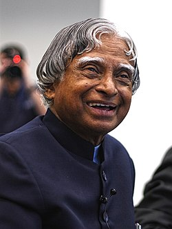

A Tribute to
15 October 1931 — 27 July 2015
"You have to dream before your dreams can come true."

Who He Was
Avul Pakir Jainulabdeen Abdul Kalam was born into a modest family in Rameswaram, Tamil Nadu. His father was a boat owner; his childhood was defined not by privilege, but by curiosity, discipline, and an unyielding hunger to learn.
He sold newspapers as a child to support his family's income. Despite the odds, he earned a degree in aeronautical engineering and went on to become one of the most consequential scientists in Indian history — the man who put India in space and gave her the missile.
As India's 11th President from 2002 to 2007, he remained, at heart, a teacher — spending more time visiting schools than palaces, inspiring a generation of young Indians to dare to dream.
Life at a Glance
Born into a Tamil Muslim family in the island town of Rameswaram, he grew up in simplicity with extraordinary dreams.
After graduating from MIT Chennai, he joined the Defence Research and Development Organisation, beginning a lifelong mission to strengthen India.
Becomes project director of India's first indigenous satellite launch vehicle, SLV-III — a landmark moment for Indian space science.
As chief coordinator, he played a pivotal role in establishing India as a declared nuclear state — earning the title Missile Man of India.
Elected as the 11th President — known for his humility, accessibility, and genuine warmth toward students and children across the country.
Passed away while delivering a lecture to students at IIM Shillong. Buried with full state honours in his beloved hometown, Rameswaram.
Don't take rest after your first victory, because if you fail in second, more lips are waiting to say that your first victory was just luck.— Dr. APJ Abdul Kalam
Legacy & Honours
Led development of Agni and Prithvi missiles, fundamentally changing India's strategic defence posture.
India's highest civilian honour, awarded for extraordinary contributions to science and national security.
His autobiography has inspired millions worldwide and remains a bestseller decades after publication.
Post-presidency, he chose to teach at IIT and IIM — refusing retirement for a life of service to students.
Received both top Padma awards before the Bharat Ratna — testament to a career of sustained national excellence.
Authored a roadmap for transforming India into a developed nation, planting seeds of ambition in an entire generation.